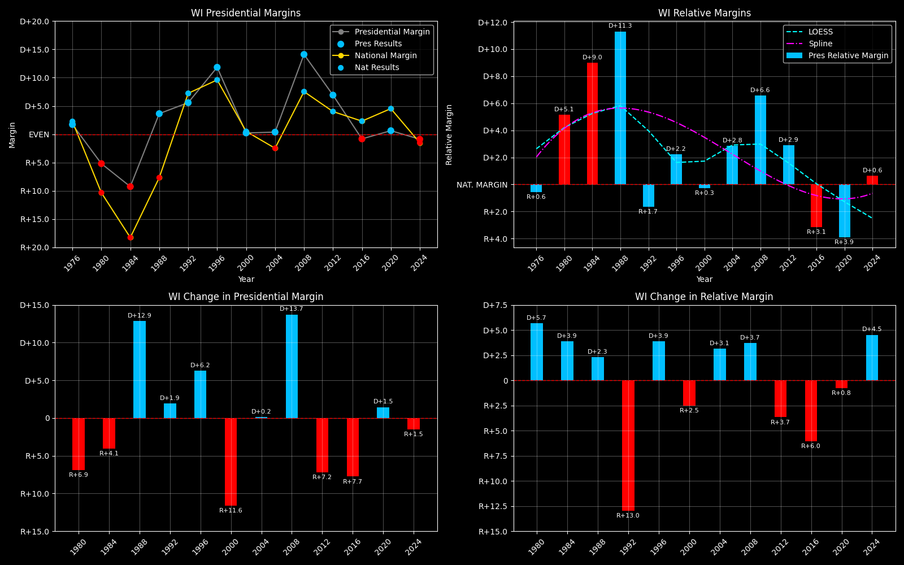

← Back to Map

Wisconsin (WI) statewide
Wisconsin (WI) — Data
| Year | D | R | Margin | Rel. Margin | Nat. Margin | Margin Δ | Rel. Margin Δ | Nat. Margin Δ |
|---|
| 1976 | 1,040,232(50.9%) | 1,004,987(49.1%) | D+1.7 | R+0.6 | D+2.3 | | | |
| 1980 | 981,584(47.4%) | 1,088,845(52.6%) | R+5.2 | D+5.1 | R+10.3 | R+6.9 | D+5.7 | R+12.6 |
| 1984 | 995,740(45.4%) | 1,198,584(54.6%) | R+9.2 | D+9.0 | R+18.2 | R+4.1 | D+3.9 | R+7.9 |
| 1988 | 1,126,794(51.8%) | 1,047,499(48.2%) | D+3.6 | D+11.3 | R+7.7 | D+12.9 | D+2.3 | D+10.6 |
| 1992 | 1,041,066(52.8%) | 930,855(47.2%) | D+5.6 | R+1.7 | D+7.2 | D+1.9 | R+13.0 | D+14.9 |
| 1996 | 1,071,971(55.9%) | 845,029(44.1%) | D+11.8 | D+2.2 | D+9.6 | D+6.2 | D+3.9 | D+2.4 |
| 2000 | 1,242,987(50.1%) | 1,237,279(49.9%) | D+0.2 | R+0.3 | D+0.5 | R+11.6 | R+2.5 | R+9.1 |
| 2004 | 1,489,504(50.2%) | 1,478,120(49.8%) | D+0.4 | D+2.8 | R+2.5 | D+0.2 | D+3.1 | R+3.0 |
| 2008 | 1,677,211(57.1%) | 1,262,393(42.9%) | D+14.1 | D+6.6 | D+7.5 | D+13.7 | D+3.7 | D+10.0 |
| 2012 | 1,620,985(53.5%) | 1,410,966(46.5%) | D+6.9 | D+2.9 | D+4.0 | R+7.2 | R+3.7 | R+3.5 |
| 2016 | 1,382,536(49.6%) | 1,405,284(50.4%) | R+0.8 | R+3.1 | D+2.3 | R+7.7 | R+6.0 | R+1.7 |
| 2020 | 1,630,866(50.3%) | 1,610,184(49.7%) | D+0.6 | R+3.9 | D+4.5 | D+1.5 | R+0.8 | D+2.2 |
| 2024 | 1,668,229(49.6%) | 1,697,626(50.4%) | R+0.9 | D+0.6 | R+1.5 | R+1.5 | D+4.5 | R+6.0 |
Column explanations
- Year
- Election year.
- D
- Number of votes for the Democratic candidate (raw count).
- R
- Number of votes for the Republican candidate (raw count).
- Margin
- Margin between the two major-party candidates ((D - R)/(D + R)).
- Rel. Margin
- The presidential margin relative to the national presidential margin (Margin - Nat. Margin).
- Nat. Margin
- The national presidential margin for that year ((D_total - R_total)/(D_total + R_total)).
- Δ
- Change (delta) in the value from the previous election year. Blank if no data for previous year.